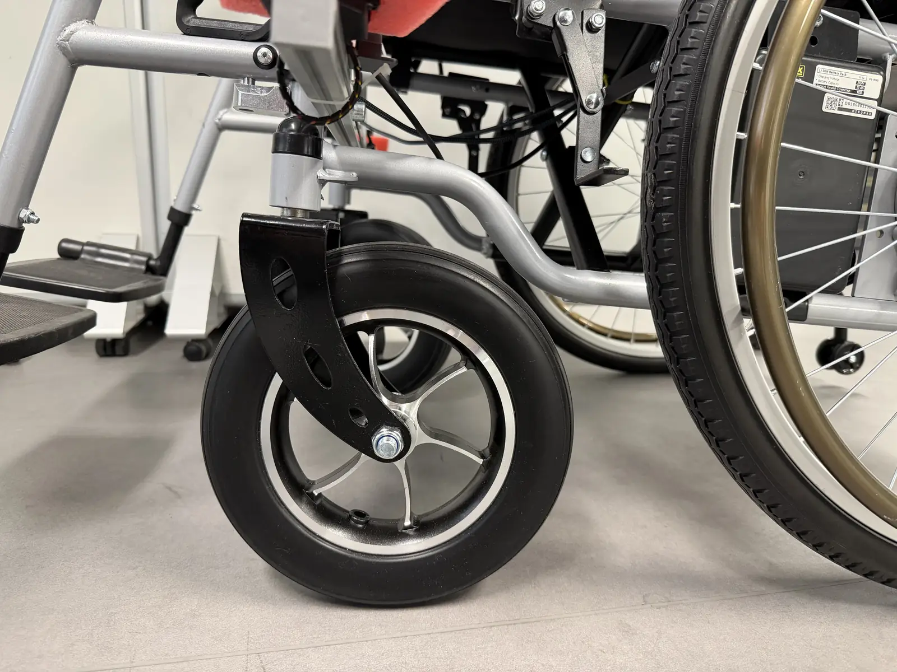
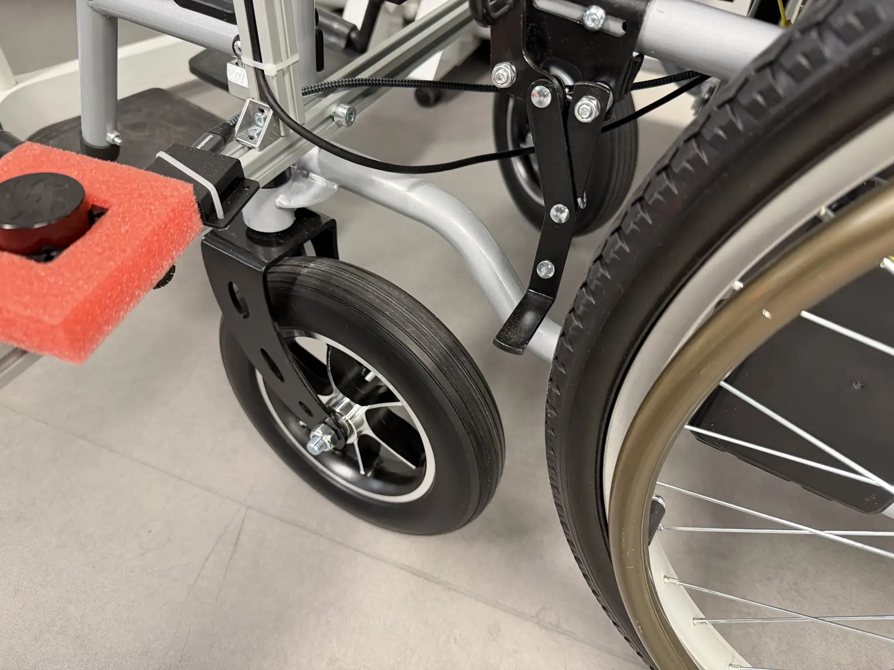

Projet 02 Recherche
Modèle dynamique d'un fauteuil roulant intelligent
Faire suivre une trajectoire à un fauteuil roulant intelligent malgré tout ce qui l'en écarte — frottements, incertitudes, roues folles. Non pas en corrigeant l'écart après coup, mais en estimant la perturbation pour la compenser à l'avance.
Le contexte
Projet de recherche et innovation mené à Junia HEI avec le laboratoire CRIStAL, en équipe de quatre étudiants, sur 2025 et 2026, sous l'encadrement de M. Meziane Larbi et M. Gilles Tagne.
Le fauteuil roulant intelligent étudié repose sur deux roues motrices et deux roues folles qui assurent son équilibre. Ces dernières réagissent au mouvement au lieu de le produire : elles pivotent librement, introduisent des efforts de contact difficiles à décrire, et pèsent pourtant sur la stabilité et la maniabilité de l'ensemble.
L'objectif est double : construire un jumeau numérique fidèle du fauteuil, puis en tirer une loi de commande capable d'assurer un suivi de trajectoire précis et stable face aux perturbations — un enjeu de sécurité autant que de confort pour une application d'assistance à la mobilité.


Le déroulé
-
État de l'art
Analyse bibliographique des modèles dynamiques déjà publiés sur ce type de système, pour partir de bases établies plutôt que d'une page blanche.
-
Modèle cinématique différentiel
Un premier modèle non holonomique limité aux deux roues motrices, reliant leurs vitesses à la vitesse linéaire et angulaire du châssis. Utile, mais trop pauvre pour commander le fauteuil avec précision — d'où la suite.
-
Modèle dynamique, puis roues folles
Le modèle dynamique est d'abord établi sans les roues folles, puis étendu pour les intégrer : efforts de contact au sol, effets d'inertie, réactions traitées par multiplicateurs de Lagrange. C'est cette extension qui rapproche réellement la simulation du comportement observé.
-
Observateur de perturbations (NESO)
Plutôt que de tenter de modéliser chaque frottement, un observateur non linéaire étendu estime en temps réel la perturbation globale agissant sur le système — frottements, incertitudes de paramètres, influence des roues folles.
-
Commande hiérarchique : MPC bas niveau, LQR haut niveau
Au niveau bas, un contrôleur à modèle prédictif régule la dynamique des moteurs à courant continu. Au niveau haut, un régulateur optimal LQR couplé au même observateur minimise les erreurs longitudinale, latérale et d'orientation. La perturbation estimée est compensée avant qu'elle ne dévie la trajectoire.
-
Simulation, puis validation sur plateforme
L'ensemble est simulé sous MATLAB/Simulink, puis validé sur la plateforme Quanser. Les résultats montrent que l'estimation active des perturbations suffit à garantir un suivi stable et précis, y compris en présence d'incertitudes.
-
Rédaction scientifique
Le travail a donné lieu à un rapport complet et à un article scientifique formalisant la démarche, les modèles et les résultats.